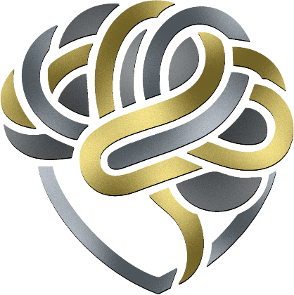

The Institution

EQGENIX
Human Capability Formation
We do not offer advice for what to feel. We build the infrastructure for how to think.

Human Capability Formation
We do not offer advice for what to feel. We build the infrastructure for how to think.
Decades of work with populations most institutions have failed.
The ones who made it were not the ones with the most resources, the best connections, or the highest intelligence. They had built something the others had not.
Some of the most advanced cognitive formation in the world — translating military discipline into civilian uncertainty, with no program built to leverage it.
Blended families navigating impossible dynamics; professionals confronting the limits of their own cognitive architecture. The same infrastructure was missing in both.
The people who thrived had built — deliberately, structurally, over time — the infrastructure to sustain themselves under pressure: to regulate without numbing, to connect without losing sovereignty, and to endure when the motivation had long since expired. This infrastructure is not innate. It is not downloadable. It is built.
“Emotional wealth is the only currency that appreciates under pressure, transfers across generations, and cannot be disrupted by technology.”
Every program is a field application of the Emotional Portfolio.
Life in Darkness is an independent 501(c)(3) that licenses EQGenix frameworks.
Yvonne G. Hall is the Founder & CEO of EQGenix, where she is building a human capability institution for an age increasingly shaped by artificial intelligence, social fragmentation, institutional strain, and declining human resilience.
Her work is built around a central conviction: the future cannot be secured by making technology more capable while allowing people to become less so.
Through EQGenix, Hall develops systems that strengthen the human capacities technology cannot replace—judgment, emotional regulation, resilience, relational intelligence, moral agency, authorship, effort tolerance, discernment, and the ability to remain sovereign under pressure.
“AI can improve the work without improving the human.”
BUILD THE HUMAN. GOVERN THE TECHNOLOGY.™
She is the architect of Formation AI™ and Human Capability Assurance, frameworks designed to answer a question most institutions have not yet learned how to measure:
“What can a person still understand, perform, verify, defend, and take responsibility for when AI is present—and when it is removed?”
Her work is organized around two complementary frameworks: Formation AI™, which develops independent professional capability, and EQGenix AI Assurance, which examines the human authority, verification, and evidence required to govern AI-assisted work.
That work has entered consequential environments. EQGenix is a California POST presenter and a founding public-safety partner of the Canyon Lake Police and Fire Departments.
But Hall's work begins long before the workplace. Through Grit to Genius™, she is building formation systems for children and adolescents designed to strengthen perseverance, identity, critical thinking, emotional regulation, responsibility, and the capacity to struggle productively rather than become dependent on immediate answers or technological shortcuts.
Through EQGenix's family and relational work, she addresses the human systems that shape people before institutions ever encounter them—marriage, parenting, blended families, conflict, belonging, emotional regulation, and the transmission of values across generations.
At the community level, Hall is advancing the City Emotional Wealth Initiative™, a civic architecture designed to identify, strengthen, protect, and compound a community's human assets across internal, relational, institutional, civic, and spiritual life.
The initiative reflects a larger belief at the center of her work: healthy cities are not built only through infrastructure and economics, but through the quality, resilience, responsibility, and relational strength of the people who inhabit them.
Her broader portfolio includes public safety, fire service, workforce development, veteran transition, youth formation, education, families, organizational capability assessment, and civic systems.
Across every environment, the objective is the same: develop people who can think clearly, regulate themselves, withstand pressure, maintain agency, form healthy relationships, exercise judgment, and remain accountable when the tool, system, or circumstance changes.
A NAMA CAMS-II Certified Applied Behavioral Researcher, author, curriculum architect, public speaker, former Guardian ad Litem, and technology professional with more than a decade of experience, Hall works at the intersection of behavioral science, technology, human development, and institutional design.
She is also the author of Sacred Deposits: The 5:1 Blueprint for Protecting Your Marriage and Executive Director of Life in Darkness, a 501(c)(3) focused on moving individuals, families, and communities from crisis toward greater human capability.
Her thesis is simple: AI can improve the work without improving the human.
Her response is larger than AI training. It is to build people who remain capable of judgment, resilience, relationship, responsibility, and meaningful human agency in a world where more and more can be outsourced.
BUILD THE HUMAN. GOVERN THE TECHNOLOGY.™
Alisia Hall is the Co-Founder & COO of EQGenix, where she drives institutional strategy, strategic partnerships, public engagement, and program execution.
Her leadership spans public safety, artificial intelligence, veteran workforce development, and youth formation, translating institutional vision into programs, partnerships, and systems built for lasting impact.
She also serves as Chief Operating Officer and Creative Director of Life in Darkness, an independent 501(c)(3) organization.
“An institution's strength is measured not only by the vision it carries, but by its ability to turn that vision into lasting impact.”
Alisia Hall is the Co-Founder & COO of EQGenix, a human capability institution advancing the development of judgment, resilience, competence, and accountability in an age increasingly shaped by artificial intelligence.
A driving force behind EQGenix's institutional growth and execution, Hall leads across strategic partnerships, public engagement, program development, technology integration, and organizational operations. Her work bridges institutional vision and real-world impact, transforming complex initiatives into functioning systems, strategic relationships, and scalable programs.
Hall plays a central role in advancing EQGenix's public safety initiatives, including its partnerships with the Canyon Lake Police and Fire Departments. Her leadership extends across law enforcement training, AI-enabled professional development, veteran workforce transition, youth formation, and institutional capability assurance.
Beyond EQGenix, Hall serves as Chief Operating Officer and Creative Director of Life in Darkness, an independent 501(c)(3) organization dedicated to strengthening individuals, families, and communities through prevention, recovery, and resilience.
Her leadership is grounded in a defining principle: “An institution's strength is measured not only by the vision it carries, but by its ability to turn that vision into lasting impact.”
Through EQGenix, Hall is helping build the partnerships, systems, and institutional foundations necessary to advance human capability across professions, generations, and communities.
BUILD THE HUMAN. GOVERN THE TECHNOLOGY.™